sb4.9: sprites i forstørret udgave
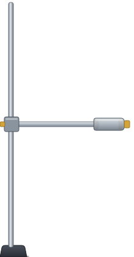
stativ.svg (ny)
kolbe.svg (som sc6.3)
varmeplade.svg (som sc2.1)
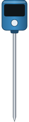
termometer.svg (ny)
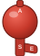
bold.svg (ny)
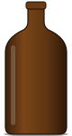
flaske_brun.svg (ny)
flaske_klar.svg (ny)
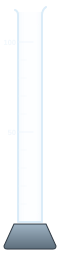
maaleglas100.svg (som sb1.4)
vial.svg (ny)
baegerglas.svg (som sc7.5)
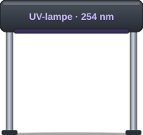
uvlampe.svg (ny)
isbad_bag.svg og isbad_for.svg (ny)
sugekolbe.svg (ny)
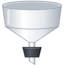
buechner.svg (ny)
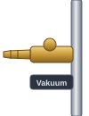
vakuumhane.svg (ny)
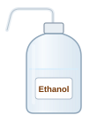
sproejteflaske.svg (som sc6.1)
urglas.svg (som sc8.5)
spatel.svg (som sc6.1)
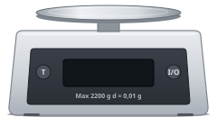
vaegt.svg (som sc5.8)
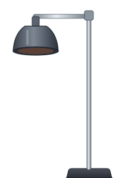
varmelampe.svg (ny)
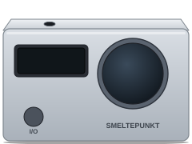
smeltepunkt.svg (ny)
Sat sammen